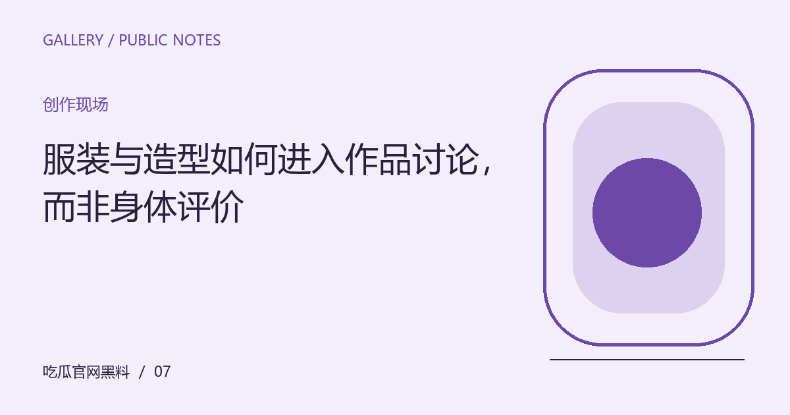

服装与造型如何进入作品讨论，而非身体评价
可以分析色彩、材质与叙事功能，也可以比较造型如何变化。把观察对象放回创作，避免让讨论滑向外貌羞辱。

先看见问题发生在哪里
造型是一种可见的创作选择：它可能区分人物身份、建立时代氛围，或在故事推进时发生变化。若讨论只停留在好看与不好看，就会忽略服装和场景、动作之间的关系，也容易把作品设计误写成对表演者身体的评价。
把观察放回具体语境
可以挑选同一角色的两场戏，观察色彩、轮廓、材质与活动方式怎样配合叙事。对于公开活动造型，说明讨论基于哪些照片和场合，不推断未公开的品牌合作。评价表达效果时给出具体依据，不以嘲讽身体特征制造话题。
带着这些线索继续阅读
这份关于“服装与造型如何进入作品讨论，而非身体评价”的整理，适合用作下一次阅读的检查起点。先明确对象，再核对材料，最后才形成解释。下面几个项目各自回答不同的问题，不必把所有资料压缩成一个好坏判断；缺少其中某项时，说明缺口，远比用想象补出完整结论更有帮助。
- 把造型放回具体场景
- 比较变化而不只截取单张图
- 区分设计判断与身体评价
让解释保留应有的边界
屏幕色彩与照片后期会影响材质和颜色的观感，不应据此给出无法确认的制作参数。公众讨论可以有偏好，但不必通过人身羞辱使观点显得锋利。明确分析对象，也能帮助不同审美之间展开交流。
保留一份可继续使用的记录
围绕“服装与造型如何进入作品讨论，而非身体评价”形成笔记后，可以再做一次自我检查：每个判断是否对应了具体材料，材料是否仍然适用于眼前的问题，自己的偏好又在哪些地方影响了解释。值得保存的不是一句漂亮结论，而是得到结论的路径。后续出现新的作品、发言或说明时，沿同一路径补充与修订，读者也就能够看清变化来自哪里。这个过程不保证所有人达成一致，但能让分歧变得可以讨论。
编辑演示：本文用于展示专题阅读；虚构情境不构成真实人物或事件报道。
下一篇：预告片提出的期待，正片一定要逐项兑现吗 →